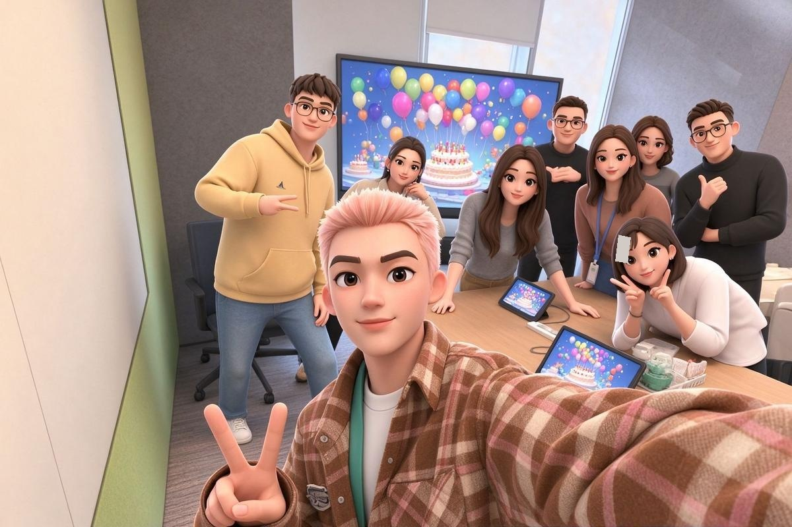

社会实践与实习经历
三段实习，三种工作日常
从第一次做外贸，到翻译评测，再到客户活动。换过几张工位，也慢慢摸清了自己能做什么。
2025.02 — 2025.07 · 大四
第一次做外贸，
就遇上从零开始
大四那半年，跟着老板姐姐做公司刚起步的外贸业务，把 Chriffer 的儿童泳具介绍给美国本土的企业客户。产品有了，客户得自己一家家找。
每天从谷歌地图
和客户名单开始
研究门店、整理名单，接着打电话、写邮件，再和当地销售代表一起推进。先让潜在客户认识 Chriffer，再争取往下聊。
一通电话、一封邮件，很多时候都只是开始。

和老板姐姐，
边做边琢磨
初创公司，大家穿得随意，事情却一点不少。两个人坐下来看看资料、商量下一步，新业务就这么一点点搭起来。
客户要找，发货、海外仓的货和人员也要管。我第一次做外贸，很多事都是一边问、一边学着上手。
toB 的单，
真的要等很久
打单周期比想象中长。好在，持续跟进终于等来了实际进展。
运动用品店谈下试单

忙是真的，学到东西也是真的。
商务英语终于用在了真实的沟通里。第一次接触外贸，也第一次正式看见商业怎么运转：从找到客户，到跟进订单，再到把货交出去。2025.11 — 2026.07 · 字节跳动
做评测，
也被大家照顾着
要去北京读研，我便辞去了外贸的工作。研究生继续学翻译，又赶上 AI 快速发展，就想去大厂看看：这个专业，能怎样用在前沿产品里？于是来到了字节语言中心。
在语言中心，评测模型的翻译与翻配能力，也跟进供应商提供的内容。工作里有很多新问题，身边也有一群自信、漂亮、松弛的姐姐。
业务涉及保密，这里只记工作方式和团队日常。

拉着伙伴们，
一起录测试素材
当时自己跟过一个小评测项目，拉着同组伙伴录制测试集，再送评、看结果、找原因复盘，继续调整录制方式。
从录素材到下一轮再试，第一次把一个小项目一路跟下来，挺有意思。

- 录制和伙伴一起准备素材
- 送评跟进一轮评测
- 复盘看结果，找原因
- 调整优化下一轮录制
进步看得到，
新问题也会冒出来
一轮轮评测下来，看着模型的表现不断进步，也总会遇到新的问题。写报告时，不能只记下结果，还得再往下找找原因。
这段经历练到的，是多看一层、多问一句：为什么会这样？
把供应商的内容跟好
除了评测，也要管理供应商提供的内容，跟进交付、检查和反馈。看模型的表现，也得把内容这一头照顾好。
姐姐们的松弛，
让我也跟着放松了
同组的姐姐们自信、漂亮、落落大方，leader 也很美、很有魅力。和她们一起做事，心里很踏实。
会一起去 KTV 唱歌，也会在有人过生日时，偷偷在会议室准备惊喜。工作之外，这些小事我都记得。



喜欢喝 NFC，
生日就收到了一打
那阵子特别喜欢喝 NFC 果汁。生日的时候，一个姐姐直接给我买了一打，抱在怀里都快拿不下。
有人记得你喜欢什么，这种被惦记着的感觉，真的很好。
学到了东西，也过得很幸福。
记得一轮轮评测里的进步和问题，也记得录素材的伙伴、KTV 的歌声，还有生日那一怀果汁。2026.07 — 至今 · 飞书商业化
忙得很满，
也飞得很开心
在语言中心体验过后，我发现自己还是更喜欢贴近生意、直接面对客户的工作。有了之前做 toB 的经验，下一站便瞄准了字节里的飞书，转到商业化做 toB Marketing。
这段实习，真的是痛并快乐着。工作量很饱和，确实体会到了大家说的字节节奏；但出差、办活动、见不同的人，也满足了以前对商务人士生活的想象。
十几场大大小小的 toB 活动

北京出发，
上海杭州成了常客
这段时间过得很快，常常在上海、杭州来回跑，也去过深圳和厦门。以前喜欢的出差生活，真的过上了——只是行李箱旁边，也常放着电脑。

忙归忙，
不是一个人在扛
策划、沟通、执行，事情常常一件接着一件。忙起来也会一起加班，但不是各自闷头赶：大家一起想办法、搭把手，把眼前的事一点点做完。
工作很满，累也是真的。可有人并肩，也有人互相照应，就多了一份踏实。最珍贵的，是一起把事情做成，也在忙碌里感受到团队的温情。
大场小场，都认真办过
办了十几场 toB 活动，也参与了飞书发布会、火山引擎 FORCE 大会策展。策划、沟通、执行都挺有意思：计划总会变，现场需要反应，也需要创意。
还和医药行业协会一起办三方大会，让更多人认识飞书和豆包工作。
不只是同事，更像一起打过仗的伙伴。
身边都是优秀的活动策划人，也是 AI builder。一起迎接变化、想办法、把一场场活动办成——忙碌之外，这种并肩作战的关系也很珍贵。